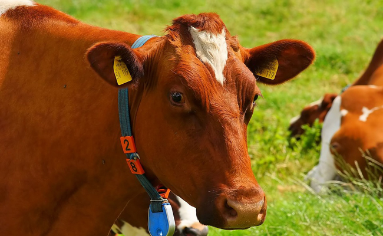
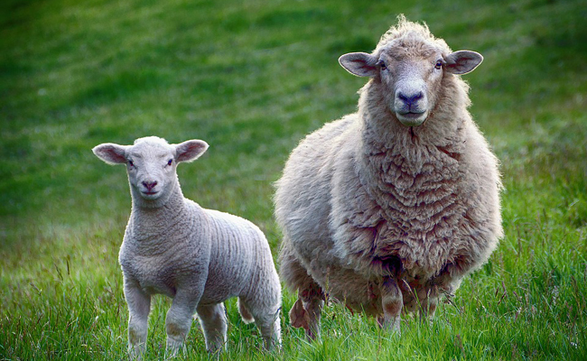
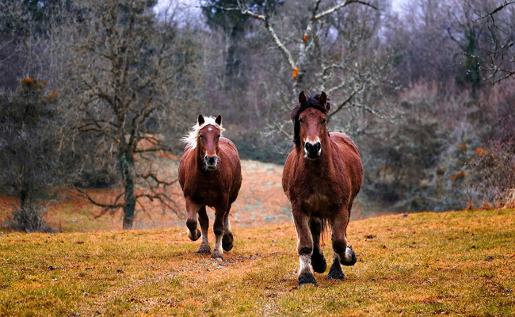

Vache, bœuf et autres bovins
Bovin est le terme qui désigne à la ferme la vache, le taureau, le bœuf et le veau. Ces mammifères ruminants de la famille des Bovidés ont besoin d’espace. En France deux filières bien distinctes constituent l’élevage bovin. On trouve en effet :
- Les races à viande ou allaitantes qui incluent les veaux élevés sous la mère c’est-à-dire nourris au lait maternel, et tous les autres bovins destinés à la boucherie,
- Les races laitières et mixtes à savoir les vaches fournissant le lait destiné à la filière agroalimentaire. Il faut cependant noter qu’après de bons et loyaux services, ces bêtes sont réformées puis engraissées pendant 8 à 16 semaines afin que leur viande puisse être commercialisée.
Quelle que soit leur race, les bovins mangent exclusivement des aliments d’origine végétale. Chaque ration doit être parfaitement équilibrée afin de répondre aux besoins de leur organisme. Mais l’alimentation des bovins varie en fonction :
- Du type de production (lait ou viande),
- De la race,
- De l’âge,
- Du sexe,
- De la région d’implantation de l’élevage,
- De la saison.

Moutons, brébis et compagnie
Elevés pour leur viande, leur lait ainsi que pour leur laine et leur cuir, les ovins de la ferme sont le bélier (mâle), la brebis (femelle du bélier), l’agneau (jeune mouton mâle) et l’agnelle (jeune brebis). Ce sont des mammifère ruminants, herbivores, de la famille des Bovidés. Ils appartiennent au genre Ovin (Ovis) et à la sous-famille des Caprins ou Caprinés.
Le
lait de brebis est principalement utilisé pour la fabrication de yaourt et de fromages que ce soit en France, en Espagne ou en Grèce par exemple. Quant à leurs cornes, leur cartilage et leurs os, ils servent à produire de la gélatine, des boutons, des jeux, différents objets sculptés ou encore de la colle.Enfin, sa graisse que l’on appelle le suif entre dans la composition de
cosmétiques.
La France compte plus de 20 000 éleveurs d’ovins et les brebis à elles seules sont près de 6 millions. Le loup est l’un des principaux fléaux des élevages d’ovins dans notre pays.

Le cheval, une aide précieuse à la ferme
Cheval est le terme générique désignant un mammifère herbivore qui appartient à la famille des Equidés. Le mâle adulte reproducteur est l’étalon, la femelle adulte est la jument et on la nomme poulinière lorsqu’elle est destinée à la reproduction. Avant l’âge de 3 ans, la jeune femelle est appelée la pouliche et le jeune mâle est le poulain. Quant au mâle castré, c’est un hongre.
Dans une ferme on peut trouver des chevaux de traits ou des chevaux de selle. Les premiers sont élevés depuis la nuit des temps pour participer aux labours, au transport de marchandises, au débardage et autres. De nos jours les maraîchers et les professionnels du domaine viticole ont encore assez fréquemment recours au cheval de trait car il permet de pratiquer une culture selon les méthodes ancestrales, et on l’utilise aussi bien en attelage que comme monture.
Le
crottin de cheval sert à fertiliser les cultures, et la viande de cheval est très appréciée par les fins gourmets. Quant au cheval de selle, il est surtout élevé par les fermiers pour l’agrément.